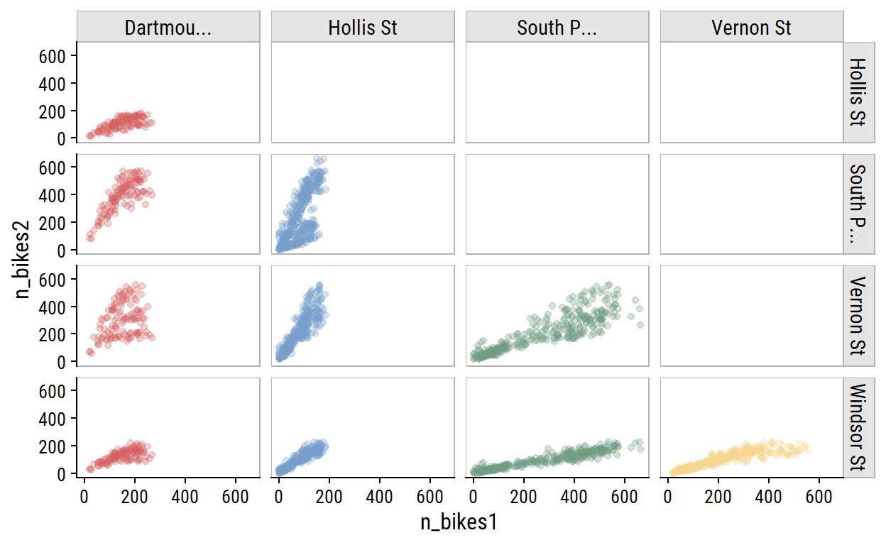
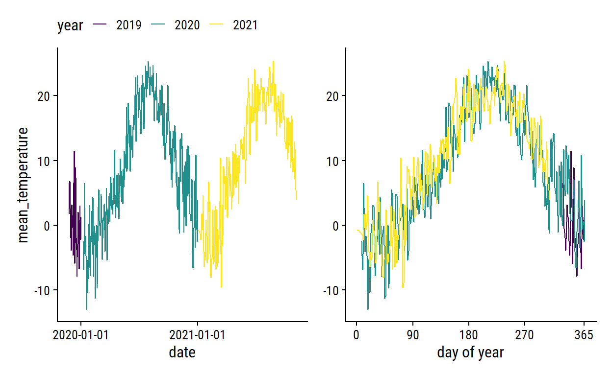
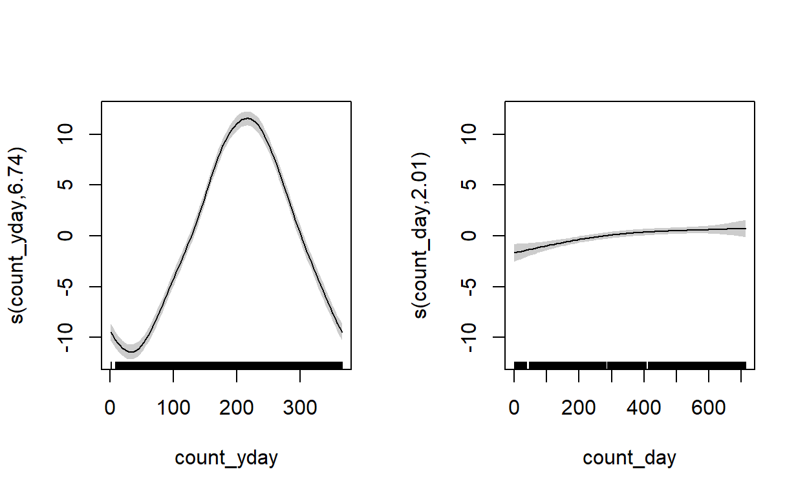
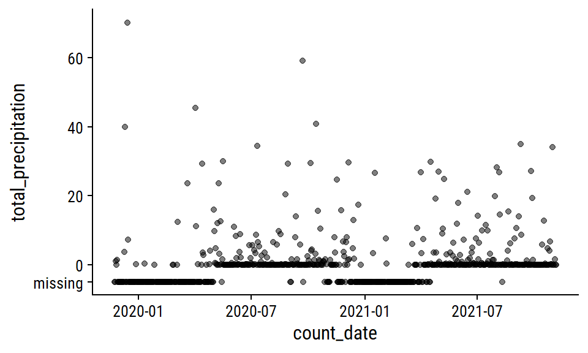
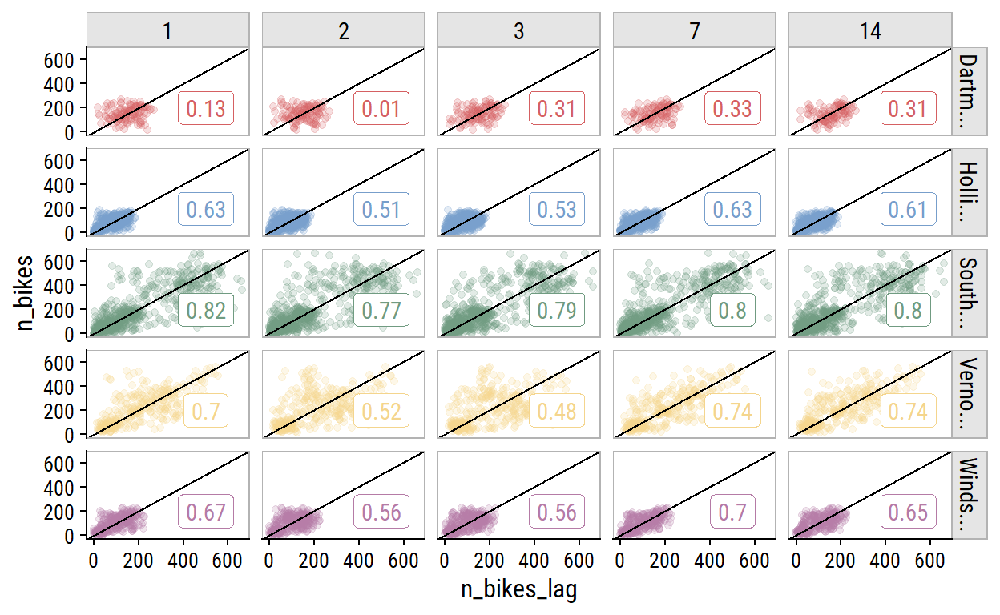
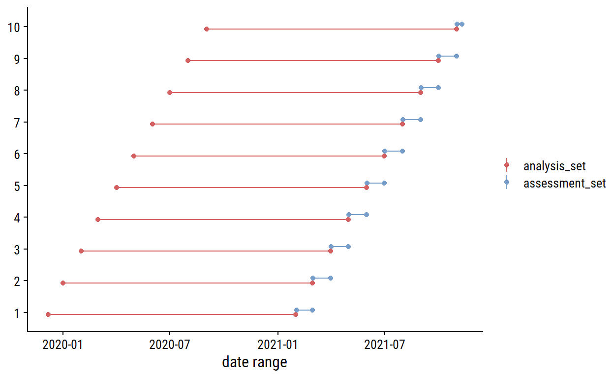

Setup
knitr::opts_chunk$set(echo = TRUE)
library(tidyverse)
library(gt)
library(patchwork)
library(tidymodels)
library(dunnr)
extrafont::loadfonts(device = "win", quiet = TRUE)
theme_set(theme_td())
set_geom_fonts()
set_palette()
Introduction
Import the data from part 1:
bike_ridership <- read_rds(
"../2022-04-27-predicting-bike-ridership-getting-the-data/bike-ridership-data.rds"
)
Exploratory data analysis
I’ve already done a bit of EDA in part 1, but I’ll dive deeper in this post.
glimpse(bike_ridership)
Rows: 2,840
Columns: 9
$ site_name <chr> "Dartmouth Harbourfront Greenway", "Dart~
$ installation_date <date> 2021-07-08, 2021-07-08, 2021-07-08, 202~
$ count_date <date> 2021-07-08, 2021-07-09, 2021-07-10, 202~
$ n_records <int> 48, 48, 48, 48, 48, 48, 48, 48, 48, 48, ~
$ n_bikes <int> 130, 54, 180, 245, 208, 250, 182, 106, 1~
$ mean_temperature <dbl> 18.2, 17.6, 21.0, 21.0, 20.6, 18.6, 17.7~
$ total_precipitation <dbl> 0.6, 10.0, 0.4, 0.0, 0.0, 0.0, 0.0, 11.6~
$ speed_max_gust <int> NA, 54, 56, NA, NA, NA, NA, 32, 37, NA, ~
$ snow_on_ground <int> NA, NA, NA, NA, NA, NA, NA, NA, NA, NA, ~The n_bikes variable here is the total number of bikes counted at site_name over count_date. In the original data, counts are recorded every hour which is reflected by the n_records variable:
| site_name | n_records | n |
|---|---|---|
| Dartmouth Harbourfront Greenway | 8 | 1 |
| Dartmouth Harbourfront Greenway | 48 | 291 |
| Hollis St | 4 | 1 |
| Hollis St | 24 | 656 |
| South Park St | 8 | 1 |
| South Park St | 48 | 884 |
| Vernon St | 8 | 1 |
| Vernon St | 48 | 502 |
| Windsor St | 8 | 1 |
| Windsor St | 48 | 502 |
All except the Hollis St site have two channels (northbound and southbound), which is why n_records = 48. The entries with fewer n_records reflect the time of day that the data was extracted:
| site_name | count_date | n_records |
|---|---|---|
| Dartmouth Harbourfront Greenway | 2022-04-25 | 8 |
| Hollis St | 2022-04-25 | 4 |
| South Park St | 2022-04-25 | 8 |
| Vernon St | 2022-04-25 | 8 |
| Windsor St | 2022-04-25 | 8 |
For this analysis, I will exclude this incomplete day:
The date ranges for each site:
bike_ridership %>%
group_by(site_name) %>%
summarise(
min_date = min(count_date), max_date = max(count_date),
n_days = n(), .groups = "drop"
) %>%
mutate(
site_name = fct_reorder(site_name, min_date),
n_days_label = ifelse(site_name == levels(site_name)[1],
str_c("n_days = ", n_days), n_days),
midpoint_date = min_date + n_days / 2
) %>%
ggplot(aes(y = site_name, color = site_name)) +
geom_linerange(aes(xmin = min_date, xmax = max_date)) +
geom_point(aes(x = min_date)) +
geom_point(aes(x = max_date)) +
geom_text(aes(label = n_days_label, x = midpoint_date), vjust = -0.5) +
scale_y_discrete(labels = ~ str_wrap(., width = 15)) +
labs(y = NULL, x = "min_date -> max_date") +
theme(legend.position = "none")

For each site, the distribution of daily n_bikes:
bike_ridership %>%
ggplot(aes(x = n_bikes, fill = site_name)) +
geom_histogram(bins = 30) +
facet_wrap(~ str_trunc(site_name, 15)) +
theme(legend.position = "none")

The South Park St site appears bimodal, which I noted in part 1 was likely due to the addition of protected bike lanes in 2021. This can be seen more clearly in the trend over time:
bike_ridership %>%
ggplot(aes(x = count_date, y = n_bikes, color = site_name)) +
geom_line() +
facet_wrap(~ site_name, ncol = 1) +
theme(legend.position = "none")

As you would expect for data in the same city, bike counters between sites are very highly correlated, which I can visualize:
bike_ridership %>%
transmute(count_date, n_bikes1 = n_bikes,
site_name1 = factor(str_trunc(site_name, 10))) %>%
left_join(., rename(., n_bikes2 = n_bikes1, site_name2 = site_name1),
by = "count_date") %>%
filter(as.numeric(site_name1) < as.numeric(site_name2)) %>%
ggplot(aes(x = n_bikes1, y = n_bikes2)) +
geom_point(aes(color = site_name1), alpha = 0.3) +
facet_grid(site_name2 ~ site_name1) +
theme(legend.position = "none") +
dunnr::add_facet_borders()

The day of the week effect looks important:
bike_ridership %>%
mutate(day_of_week = lubridate::wday(count_date, label = TRUE)) %>%
ggplot(aes(x = day_of_week, y = n_bikes)) +
geom_jitter(aes(color = site_name), height = 0, width = 0.2, alpha = 0.3) +
stat_summary(fun = "mean", geom = "point") +
facet_wrap(~ site_name) +
theme(legend.position = "none") +
dunnr::add_facet_borders()

Another thing to consider is holidays. I can get Canadian holidays with the timeDate package (which is how recipes::step_holiday() works):
# Get the
library(timeDate)
canada_holidays <-
timeDate::listHolidays(
pattern = "^CA|^Christmas|^NewYears|Easter[Sun|Mon]|^GoodFriday|^CaRem"
)
canada_holidays
[1] "CACanadaDay" "CACivicProvincialHoliday"
[3] "CALabourDay" "CaRemembranceDay"
[5] "CAThanksgivingDay" "CAVictoriaDay"
[7] "ChristmasDay" "ChristmasEve"
[9] "EasterMonday" "EasterSunday"
[11] "GoodFriday" "NewYearsDay" Then get the dates for each across the years in the bike data:
canada_holiday_dates <- tibble(holiday = canada_holidays) %>%
crossing(year = 2019:2022) %>%
mutate(
holiday_date = map2(
year, holiday,
~ as.Date(timeDate::holiday(.x, .y)@Data)
)
) %>%
unnest(holiday_date)
canada_holiday_dates %>% rmarkdown::paged_table()
Only day I can think is missing from this list is Family Day (Heritage Day in Nova Scotia) which is the third Monday in February. Visualize the effect of these holidays on bike ridership by plotting n_bikes in a 2 week window around the holidays (only the South Park St site for this plot):
canada_holiday_dates %>%
filter(holiday_date %in% unique(bike_ridership$count_date)) %>%
mutate(
date_window = map(holiday_date, ~ seq.Date(.x - 7, .x + 7, by = "1 day"))
) %>%
unnest(date_window) %>%
left_join(
bike_ridership, by = c("date_window" = "count_date")
) %>%
mutate(is_holiday = holiday_date == date_window) %>%
group_by(holiday) %>%
mutate(day_from_holiday = as.numeric(holiday_date - date_window)) %>%
ungroup() %>%
filter(site_name == "South Park St") %>%
ggplot(aes(x = day_from_holiday, y = n_bikes,
group = factor(year))) +
geom_line() +
geom_vline(xintercept = 0, lty = 2) +
geom_point(aes(color = factor(year))) +
scale_color_viridis_d("year") +
facet_wrap(~ holiday) +
dunnr::add_facet_borders() +
theme(legend.position = "top")
The only holiday with a clear drop in ridership is Labour Day in 2021. Victoria Day seems to have the opposite effect. The Good Friday, Easter Sunday and Easter Monday holidays are obviously overlapping, and the n_bikes trend is a bit of a mess, but I can see an indication to the left of Good Friday that there may be a drop in ridership going into that weekend.
One thing to note is that the first, middle and last points correspond to the same day of the week, and the middle point in this set is usually lower than the other two, so holidays may be useful features in conjunction with day of the week.
The weather variables have varying levels of completeness:
# Separate out the weather data
weather_data <- bike_ridership %>%
distinct(count_date, mean_temperature, total_precipitation,
speed_max_gust, snow_on_ground)
weather_data %>%
mutate(across(where(is.numeric), is.na)) %>%
pivot_longer(cols = -count_date) %>%
ggplot(aes(x = count_date, y = name)) +
geom_tile(aes(fill = value)) +
labs(y = NULL, x = NULL, fill = "Missing") +
scale_fill_manual(values = c(td_colors$nice$indigo_blue, "gray80")) +
scale_x_date(expand = c(0, 0)) +
scale_y_discrete(expand = c(0, 0)) +
theme(legend.position = "top")
The distributions:
weather_data %>%
pivot_longer(cols = -count_date) %>%
filter(!is.na(value)) %>%
ggplot(aes(x = value, fill = name)) +
geom_histogram(bins = 30) +
scale_y_continuous(expand = c(0, 0)) +
facet_wrap(~ name, nrow = 1) +
theme(legend.position = "none")

For non-missing cases, plot the pairwise relationships:
weather_data %>%
pivot_longer(cols = -count_date, names_to = "var1", values_to = "val1") %>%
mutate(var1 = factor(var1)) %>%
left_join(., rename(., var2 = var1, val2 = val1),
by = "count_date") %>%
filter(!is.na(val1), !is.na(val2),
# Use numeric factor labels to remove duplicates
as.numeric(var1) < as.numeric(var2)) %>%
ggplot(aes(x = val1, y = val2, color = var1)) +
geom_point(alpha = 0.5) +
facet_grid(var2 ~ var1, scales = "free") +
theme(legend.position = "none") +
dunnr::add_facet_borders()

The clearest relationship to me is unsurprising: increasing mean_temperature is associated with decreasing snow_on_ground (top left plot).
Visualize relationships with n_bikes:
bike_ridership %>%
pivot_longer(
cols = c(mean_temperature, total_precipitation,
speed_max_gust, snow_on_ground),
names_to = "var", values_to = "val"
) %>%
filter(!is.na(val)) %>%
ggplot(aes(x = val, y = n_bikes)) +
geom_point(aes(color = str_trunc(site_name, 15)), alpha = 0.4) +
facet_wrap(~ var, nrow = 2, scales = "free_x") +
dunnr::add_facet_borders() +
labs(x = NULL, color = NULL) +
theme(legend.position = "bottom")

All of the weather variables seem to be associated with n_bikes. In terms of predictive value, mean_temperature looks like it might be the most useful, and speed_max_gust the least.
Feature engineering
From my EDA, I decided I want try including all 4 weather variables to predict bike ridership. For some of the machine learning models I plan to try (like basic linear regression), this will require imputation of missing values, which I’ll attempt here.
Add some more time variables for working with the weather_data:
Temperature
The mean_temperature variable is missing 3% of values. Visualize the trend over time:
p1 <- weather_data %>%
filter(!is.na(mean_temperature)) %>%
ggplot(aes(x = count_date, y = mean_temperature)) +
geom_line(aes(color = factor(count_year))) +
scale_color_viridis_d("year") +
scale_x_date("date", date_breaks = "1 year")
p2 <- weather_data %>%
filter(!is.na(mean_temperature)) %>%
ggplot(aes(x = count_yday, y = mean_temperature)) +
geom_line(aes(color = factor(count_year))) +
scale_color_viridis_d("year") +
scale_x_continuous("day of year", breaks = c(0, 90, 180, 270, 365)) +
labs(y = NULL)
p1 + p2 +
plot_layout(guides = "collect") &
theme(legend.position = "top")
The cyclic nature makes it a good candidate for smoothing splines. As a starting point, try a natural spline with 5 knots on the count_yday variable:
library(splines)
lm_temperature <-
lm(mean_temperature ~ ns(count_yday, knots = 5),
data = filter(weather_data, !is.na(mean_temperature)))
p1 +
geom_line(
data = augment(lm_temperature, newdata = weather_data),
aes(y = .fitted), size = 1
) +
theme(legend.position = "top")

We can obviously do a lot better. I’ll fit the data using a generalized additive model (GAM) with the mgcv package.1 For the count_yday variable (ranges from 1-365), I’ll make sure that there is no discontinuity between year by using a cyclic spline (bs = "cc"). I’ll also include a smoothing term of count_day which will capture the trend across years.
library(mgcv)
gam_temperature <-
gam(mean_temperature ~ s(count_yday, bs = "cc", k = 12) + s(count_day),
data = filter(weather_data, !is.na(mean_temperature)))
plot(gam_temperature, pages = 1, shade = TRUE)

The left plot shows the seasonal trend within a year (note the lines would connect at count_yday = 1 and 365), and the right plot shows the increase in average temperature throughout time (across years) after accounting for the seasonal effect. Overlay the fit:
p1 +
geom_line(
data = augment(gam_temperature, newdata = weather_data),
aes(y = .fitted), size = 1
) +
theme(legend.position = "top")

It doesn’t capture some of the coldest temperatures, but I’m pretty happy with that. I’ll use predictions from the GAM model to impute missing days:
Precipitation and snow
The total_precipitation variable is missing 46% of values; 65% for snow_on_ground.
The total_precipitation distribution:
p1 <- weather_data %>%
mutate(total_precipitation = replace_na(total_precipitation, -5)) %>%
ggplot(aes(x = count_date, y = total_precipitation)) +
geom_point(alpha = 0.5) +
scale_y_continuous(breaks = c(-5, 0, 20, 40),
labels = c("missing", 0, 20, 40))
p1

This pattern of missing data during winter months makes me think that the total_precipitation is actually total rainfall, i.e. snowfall is not counted. I’m going to impute the missing values with 0 during pre-processing, which is admittedly a poor approximation of the truth – I know first-hand that there has been some rainy days in Halifax during April 2022, for example.
The snow_on_ground distribution:
p2 <- weather_data %>%
mutate(snow_on_ground = replace_na(snow_on_ground, -2)) %>%
ggplot(aes(x = count_date, y = snow_on_ground)) +
geom_point(alpha = 0.5) +
scale_y_continuous(breaks = c(-2, 0, 10, 20),
labels = c("missing", 0, 10, 20))
p2

I’ll take the same zero imputation approach here, which I’m a lot more confident doing here because most of the missing values occur during non-winter months. A more careful approach might involve imputing 0 during non-winter months that I’m certain would have no snow on the ground, then modeling the winter months with something like a zero-inflated Poisson model.
Wind speed
The speed_max_gust variable is the daily maximum wind speed in km/h, and has 39% missing values.
mean_speed <- mean(weather_data$speed_max_gust, na.rm = TRUE)
weather_data %>%
mutate(
speed_max_gust = replace_na(speed_max_gust, 20)
) %>%
ggplot(aes(x = count_date, y = speed_max_gust)) +
geom_line(data = . %>% filter(speed_max_gust > 20)) +
geom_smooth(data = . %>% filter(speed_max_gust > 20),
method = "loess", formula = "y ~ x") +
geom_hline(yintercept = mean_speed,
color = td_colors$nice$opera_mauve, size = 1, lty = 2) +
geom_jitter(data = . %>% filter(speed_max_gust == 20),
width = 0, alpha = 0.5) +
scale_y_continuous(breaks = c(mean_speed, 20, 40, 60, 80),
labels = c("mean_speed", "missing", 40, 60, 80))

Relative to the noise, the time trends are pretty minor, and the missing data looks to be missing at random. I’ll just impute using the mean speed.
Lagged counts
As a time series data set, it would be careless to not account for past data when predicting future data. One of the models I fit will be ARIMA, but for the other models I will include lagged n_bikes values. Investigate the correlation in n_bikes for values lagged by 1, 2 and 3 days, and by 1 and 2 weeks (because they are the same day of the week):
bike_ridership_lag <- bike_ridership %>%
arrange(site_name, count_date) %>%
group_by(site_name) %>%
mutate(
n_bikes_lag_1 = lag(n_bikes, 1),
n_bikes_lag_2 = lag(n_bikes, 2),
n_bikes_lag_3 = lag(n_bikes, 3),
n_bikes_lag_7 = lag(n_bikes, 7),
n_bikes_lag_14 = lag(n_bikes, 14)
)
bike_ridership_lag %>%
select(site_name, count_date, starts_with("n_bikes")) %>%
pivot_longer(cols = matches("n_bikes_lag"),
names_to = "lag_days", values_to = "n_bikes_lag") %>%
filter(!is.na(n_bikes_lag)) %>%
mutate(lag_days = str_extract(lag_days, "\\d+") %>% as.integer()) %>%
group_by(site_name, lag_days) %>%
mutate(corr_coef = cor(n_bikes, n_bikes_lag)) %>%
ggplot(aes(x = n_bikes_lag, y = n_bikes, color = site_name)) +
geom_point(alpha = 0.2) +
geom_label(data = . %>% distinct(n_bikes_lag, site_name, corr_coef),
aes(label = round(corr_coef, 2), x = 500, y = 200)) +
geom_abline(slope = 1) +
facet_grid(str_trunc(site_name, 10) ~ factor(lag_days)) +
dunnr::add_facet_borders() +
theme(legend.position = "none")

The 7- and 14-day lagged values are correlated just as strongly (in some cases stronger) than the other options. This is great news because I only want to include a single lag variable, and using the 14th day lag means I can forecast 14 days ahead.
In order to use 14-day lag in a tidymodels workflow, I need to add it to the data myself. The step_lag() function won’t allow the outcome n_bikes to be lagged, because any new data won’t have an n_bikes variable to use. See the warning in this section of the Tidy Modeling with R book. Add the n_bikes_lag_14 predictor, and exclude any values without it:
Modeling
Register parallel computing:
n_cores <- parallel::detectCores(logical = FALSE)
library(doParallel)
cl <- makePSOCKcluster(n_cores - 1)
registerDoParallel(cl)
Splitting and resampling
For splitting the data into training and testing sets, there is the initial_time_split() function in rsample to account for the time dependence.
# Need to order by time to properly use time split
bike_ridership <- bike_ridership %>% arrange(count_date, site_name)
set.seed(3005)
bike_split <- initial_time_split(bike_ridership, prop = 0.7)
bike_train <- training(bike_split)
bike_test <- testing(bike_split)
bind_rows(
train = bike_train, test = bike_test, .id = "data_set"
) %>%
group_by(data_set, site_name) %>%
summarise(
min_date = min(count_date), max_date = max(count_date),
n_days = n(), midpoint_date = min_date + n_days / 2,
.groups = "drop"
) %>%
ggplot(aes(y = fct_reorder(site_name, min_date), color = data_set)) +
geom_linerange(aes(xmin = min_date, xmax = max_date),
position = position_dodge(0.2)) +
geom_point(aes(x = min_date), position = position_dodge(0.2)) +
geom_point(aes(x = max_date), position = position_dodge(0.2)) +
geom_text(aes(label = n_days, x = midpoint_date), vjust = -0.5,
position = position_dodge(0.2), show.legend = FALSE) +
labs(x = "date range", y = NULL, color = NULL)
It might make more sense to stratify by site_name so that there is a 70-30 split in each site. 2 For now, I’m using a simpler approach to split into the first 70% and 30% of the data.
For re-sampling, I will use sliding_period() to break up the data into 12 months of data for analysis and 1 month for assessment:
bike_resamples <-
sliding_period(bike_train, index = count_date,
period = "month", lookback = 11, assess_stop = 1)
Visualize the resamples:
bind_rows(
analysis_set = map_dfr(bike_resamples$splits, analysis, .id = "i"),
assessment_set = map_dfr(bike_resamples$splits, assessment, .id = "i"),
.id = "data_set"
) %>%
mutate(i = as.integer(i)) %>%
group_by(i, data_set) %>%
summarise(
min_date = min(count_date), max_date = max(count_date),
n_days = n(), midpoint_date = min_date + n_days / 2,
.groups = "drop"
) %>%
ggplot(aes(y = factor(i), color = data_set)) +
geom_linerange(aes(xmin = min_date, xmax = max_date),
position = position_dodge(0.3)) +
geom_point(aes(x = min_date), position = position_dodge(0.3)) +
geom_point(aes(x = max_date), position = position_dodge(0.3)) +
labs(x = "date range", y = NULL, color = NULL)

I’ll define a set of metrics to use here as well:
#bike_metrics <- metric_set(rmse, rsq, poisson_log_loss)
bike_metrics <- metric_set(rmse, rsq, mase, poisson_log_loss)
The Poisson log loss is a new one to me, that was recently added to yardstick.
Pre-processing
For my base model, I’ll include just site_name and n_bikes_lag_14:
bike_recipe <-
recipe(n_bikes ~ count_date + site_name + n_bikes_lag_14,
data = bike_train) %>%
add_role(count_date, new_role = "date_variable") %>%
step_novel(all_nominal_predictors()) %>%
step_dummy(all_nominal_predictors()) %>%
step_zv(all_predictors())
prep(bike_recipe) %>%
bake(bike_train) %>%
rmarkdown::paged_table()
An extension of this model will include date variables of day of week, day of year, year and holidays (using the Canadian holidays I showed previously):
bike_recipe_date <-
recipe(n_bikes ~ count_date + site_name + n_bikes_lag_14,
data = bike_train) %>%
#step_naomit(n_bikes_lag_14, skip = TRUE) %>%
add_role(count_date, new_role = "date_variable") %>%
step_date(count_date, features = c("dow", "doy", "year"),
label = TRUE, ordinal = FALSE) %>%
#step_bs(count_date_doy, deg_free = tune()) %>%
step_ns(count_date_doy, deg_free = tune()) %>%
#options = list(Boundary.knots = c(1, 365))) %>%
step_holiday(count_date, holidays = canada_holidays) %>%
step_novel(all_nominal_predictors()) %>%
step_dummy(all_nominal_predictors()) %>%
step_zv(all_predictors())
The first models I will run these recipes through are simple linear regression and Poisson regression. I would prefer to use negative binomial regression instead of Poisson to account for overdispersion, but this model hasn’t been implemented in parsnip yet.
lm_spec <- linear_reg(engine = "lm")
library(poissonreg) # This wrapper package is required to use `poisson_reg()`
poisson_spec <- poisson_reg(engine = "glm")
wf_set_1 <- workflow_set(
#preproc = list(base = bike_recipe),
#preproc = list(test = bike_recipe_null, base = bike_recipe),
preproc = list(base = bike_recipe, dates = bike_recipe_date),
#models = list(linear_reg = lm_spec), #, poisson_reg = poisson_spec),
models = list(linear_reg = lm_spec, poisson_reg = poisson_spec),
#models = list(poisson_reg = poisson_spec),
cross = TRUE
)
wf_set_1
# A workflow set/tibble: 4 x 4
wflow_id info option result
<chr> <list> <list> <list>
1 base_linear_reg <tibble [1 x 4]> <opts[0]> <list [0]>
2 base_poisson_reg <tibble [1 x 4]> <opts[0]> <list [0]>
3 dates_linear_reg <tibble [1 x 4]> <opts[0]> <list [0]>
4 dates_poisson_reg <tibble [1 x 4]> <opts[0]> <list [0]>wf_set_1_res <- workflow_map(
wf_set_1,
#"fit_resamples",
"tune_grid", grid = grid_regular(deg_free(range = c(3, 8)), levels = 6),
resamples = bike_resamples,
metrics = bike_metrics, verbose = TRUE
)
For plotting the results of a set of workflows, I’ll use a custom plotting function with rank_results():
plot_wf_set_metrics <- function(wf_set_res, rank_metric = "rmse") {
rank_results(wf_set_res, rank_metric = rank_metric) %>%
mutate(preproc = str_remove(wflow_id, paste0("_", model))) %>%
ggplot(aes(x = rank, y = mean, color = model, shape = preproc)) +
geom_point(size = 2) +
geom_errorbar(aes(ymin = mean - std_err, ymax = mean + std_err),
width = 0.2) +
facet_wrap(~ .metric, scales = "free_y")
}
plot_wf_set_metrics(wf_set_1_res)

It shouldn’t come as a surprise that (1) the date variables improve performance, and that (2) Poisson regression did poorly, because we have significant over-dispersion in n_bikes:
bike_train %>%
group_by(site_name) %>%
summarise(mean_n_bikes = mean(n_bikes), var_n_bikes = var(n_bikes)) %>%
gt() %>%
fmt_number(matches("n_bikes"), decimals = 1)
| site_name | mean_n_bikes | var_n_bikes |
|---|---|---|
| Dartmouth Harbourfront Greenway | 145.0 | 3,121.0 |
| Hollis St | 77.0 | 2,180.4 |
| South Park St | 174.3 | 26,593.6 |
| Vernon St | 212.2 | 18,080.0 |
| Windsor St | 96.3 | 3,413.2 |
I may re-visit this problem when the negative binomial model is implemented in parsnip.
#bike_preds_1 <- test_fits$.predictions[[1]]
bike_analysis_1 <- analysis(bike_resamples$splits[[1]])
bike_assess_1 <- assessment(bike_resamples$splits[[1]])
wf1_final <- finalize_workflow(wf1, parameters = list(deg_free = 3))
bike_fit_1 <- fit(wf1_final, bike_analysis_1)
bike_lm_1 <- extract_fit_engine(bike_fit_1)
summary(bike_lm_1)
xgboost_recipe <-
recipe(formula = n_bikes ~ site_name + n_bikes_lag_14, data = bike_train, clipboard = T) %>%
step_string2factor(one_of("site_name")) %>%
step_novel(all_nominal_predictors()) %>%
step_dummy(all_nominal_predictors(), one_hot = TRUE) %>%
step_zv(all_predictors())
xgboost_spec <-
boost_tree(trees = tune(), min_n = tune(), tree_depth = tune(), learn_rate = tune(),
loss_reduction = tune(), sample_size = tune()) %>%
set_mode("regression") %>%
set_engine("xgboost")
xgboost_workflow <-
workflow() %>%
add_recipe(xgboost_recipe) %>%
add_model(xgboost_spec)
set.seed(6376)
xgboost_tune <-
tune_grid(xgboost_workflow, resamples = stop("add your rsample object"), grid = stop("add number of candidate points"))
usemodels::use_xgboost(n_bikes ~ site_name + n_bikes_lag_14, data = bike_train, clipboard = TRUE, colors = FALSE)
Reproducibility
Session info
setting value
version R version 4.1.3 (2022-03-10)
os Windows 10 x64
system x86_64, mingw32
ui RTerm
language (EN)
collate English_Canada.1252
ctype English_Canada.1252
tz America/Curacao
date 2022-05-01 Git repository
Local: bike-ridership C:/Users/tdunn/Documents/tdunn
Head: [e736578] 2022-05-01: Debugging a preproc errorCheck out this blog post by Gavin Simpson for a great walkthrough of modeling seasonal data with GAMs.↩︎
Since
initial_time_split()doesn’t takestrataargument, this would require defining a custom split function withrsample::make_splits(). This functionality might be available in future versions ofrsample(see this issue).↩︎